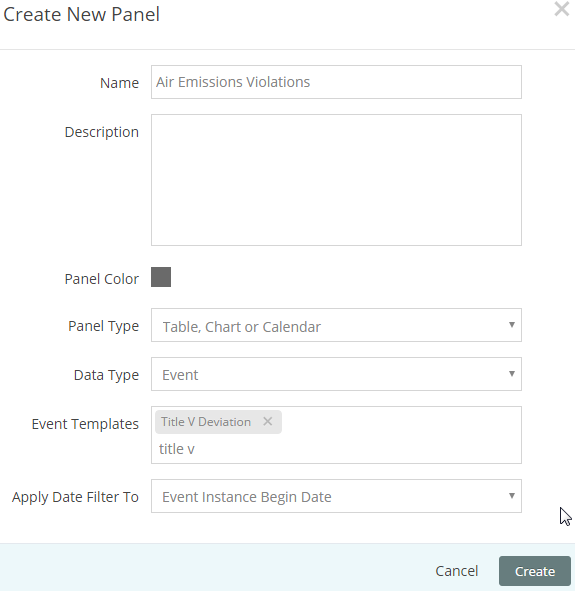
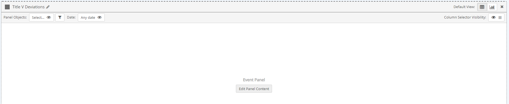
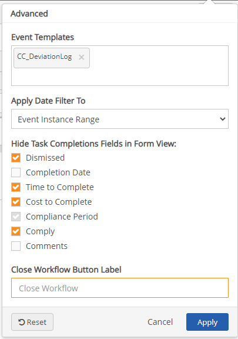

From the Add New Panel dialog, click Create New Panel.
Or, select panel template(s) to add and click Add selected Panels.
Enter a name for the panel and optional description.
Choose a panel color (color of the top bar and frame).
For the Panel Type, select Table, Chart or Calendar.
For the Data Type, select Events.
Select the Event Template associated with the events you want to display. Enter a few characters of the workflow type name, then select from the matches offered. You may select one or more.
Select the field to apply the Date Filter to: Event Instance Range, Event Instance Begin Date, Event Instance End Date, or any date or date/time custom field found on the event template.

Select Create.
Once the panel has been added to the page, click Edit Panel Contents to configure the settings. You will be prompted to save the page first before proceeding to the configuration screen.

Panel Objects: Panel object selections will filter events for those associated with the selected objects or by their parent objects. Events are filtered first by the Event Templates you select for the panel. If you want to filter events in the panel by location (i.e., by Facility), you can select panel objects.
In the Management System, events are associated with monitored requirements. The filter will be applied to the location of the monitored requirement.
To select system objects for filtering events: See Set Panel Objects Filter. Objects used in the panel may be any subset of the objects selected in the page object selector.
If the Ignore Page Filters panel setting is active, you will override any of the objects selected in the Page Objects filter. If Show Users All Objects in System is active in the page and/or panel settings, users may select any object in the system, regardless of their Management System object permissions. Users will then be able to view event data for any object, but will still require proper permissions in order to edit the event instance form.
If you want to display all events with the associated Event Template(s) without regard to objects, you can disable the object selector. You can also disable the panel object selector if you want to apply only the objects selected for the page.
To disable the object selector:
Click the Panel Objects box.
Select the eyeball to disable it.
Click Apply.
Date Range: The date range defines the period for the events displayed in the panel. The date range may apply to the Event Instance Begin Date, Event Instance End Date, Event Instance Range, or to any custom date field on the Event form template. You select the field to apply it to when you create the panel. You may change the field for the date filter by selecting Edit Panel Content, then the Advanced properties (see below).
By default the panel will use the date range selected for the page. However, a date range selector may be enabled for the panel, which will operate independently of the page date selector. You may pre-configure the panel to show the relative period that users will need (such as This Month). You may also decide whether you want users to be able to set a custom date range with specific start and end dates, or use only the pre-configured date range. To configure the panel date range, see Panel Date Selector.
Default View: Select either the Table or Chart icon to set the default view.
Column Selector Visibility: Use this option to enable or disable the column selector button. When enabled, users can choose to hide or show columns in the table display to customize the view and to select columns for downloading to Excel.
You can edit the events displayed in the panel, including:
Change or add event templates
Edit the field used for the date filter.
To edit Event content for the panel and the form:
Click Edit Panel Contents, then select Advanced.

Event Templates: Add the event templates that you want to include in the panel. If no type is selected, all events that apply to the page or panel objects will be displayed.
Apply Date Filter To: Event Instance Range, Event Instance Begin Date, Event Instance End Date, or any date or date/time custom field found on the event template.
Hide Task Completion Fields in Form View: Check the task completion fields that you do not want to show on the form when there is an associated task. By default, only the Completion Status, Completion Date and Comments fields are shown. Other optional fields are hidden.
Close Workflow Button Label: Type the desired name of the button that closes the workflow. The name appears on the workflow form.
Click Apply to apply settings.
Select Save to save changes to the panel. Also click Save to save the page after changes.
The default columns on the Event panel are:
Form: Opens the event form in the Portal (in a new tab). The page shows the fields on the event template, along with task fields, if there is a task associated with the event.
Facility
Event Instance Begin Date
Name
Requirement
Log Path
Log Name
You can add additional columns from the Field Selector menu on the left and edit the column display.
Additional columns for Events include:
Link: Opens the event form in the Management System. Can be used in place of or in addition to the Form link. The user will require permissions in the Management System.
Native Event fields; in addition to default fields above, includes:
Average Data Value
Count Data Value
Duration
End Date
Event Instance Range
Internal Limit High
Internal Limit Low
Maximum Data Value
Minimum Data Value
Regulatory Limit High
Regulatory Limit Low
Selected Limit High
Selected Limit Low
Template Name
In order to show values for the pre-configured event fields, the fields must be present on the Event Template. If not, when you add the field to a panel, the value will be null.
Custom event fields from the event template selected for the panel.
Associated Object Name
Both native and custom fields from objects associated with the event or parent objects.